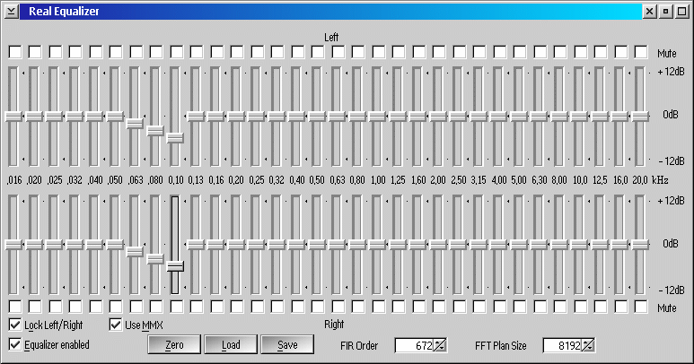

The Real Equalizer plugin provides a 1/3-octave equalizer and excellent sound quality. The plugin is provided with PM123 and is located in file REALEQ.DLL. Install it via PM123's Properties dialog (Add filter plugin button). You can display the configuration window by pressing the Configure button in the same dialog.

Adjust FIR Order to suit your machine (at least P150 recommended for FIR order 64).
This Equalizer is a THE real thing. A full fledged FIR designed with the window method using RDFT and a Hamming window. This equalizer can also be used with any decoders contrarily to the MPEG audio decoder! Also since it's a real EQ, it uses juice. I mean major juice. Although, with MMX, the overhead is reduced A LOT. I'm planning on using a Remez exchange algorithm instead of the window method to optimize the FIR order needed to achieve the desired result. All I know is that it can "significantly reduce the order of a FIR filter", what that exactly means, I don't know. I also don't have time to work on an IIR based filter, MMX being pretty much the savior of FIR filters on the Intel platform and because IIR filters dephase the sound (lower quality).
To come back on the filter order for the casual user, this is the number of samples processed (in addition to the current sample) to obtain a new sample. What does this means? Ok say you are playing at 44100Hz, this means there are 44100 samples passing per second in the filter also, right? Ok, so say you'd like to catch 20Hz and filter that decently. This means you will need a filter order of at least 44100/20-1 = 2204!!! With values in this range, you can make your stereo EQ jealous. Get a Pentium III or Athlon and ditch your stereo.
This also means that with a small 64 coeficient filter order, the EQ cannot process frequencies under 44100/(64+1) = ~678Hz properly. So the choice of any bands under this frequency might be irrelevant, and modifying one of the other might give the same effect (if any effect at all). The 32 middle octave bands are calculated by step of 1/3 octave as defined by the ISO standard and are as follow in Hz:
16.0, 20.0, 25.0, 31.5, 40.0, 50.0, 63.0, 80.0, 100, 125, 160, 200, 250, 315, 400, 500, 630, 800, 1000, 1250, 1600, 2000, 2500, 3150, 4000, 5000, 6300, 8000, 10000, 12500, 16000, 20000.
The FIR order needs to be a multiple of 2 (or 16 because of MMX). The plansize is for the initial FFT and therefore needs to be a power of 2. Just leave it at 8192, that's fine, unless you are planning on playing anything way over 48000kHz.
WARNING!! If you do not "Use MMX", the FPU will be used and you might not be able to get away with 512 coeficients with the FPU. So change it to some more reasonable values such as 64 before trying it.
With MMX, it can play realtime with 768 coeficients on a P166 MMX and it can easily do 4096 with a Celeron 500!! This is pretty much as good as most professional EQs...!!